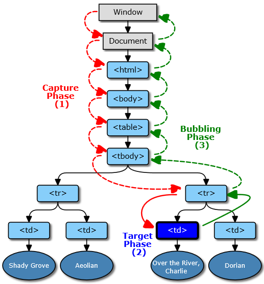
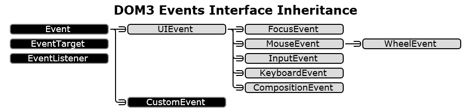
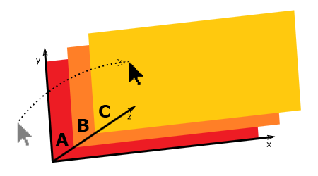

Web и DHTML
События в DOM
Леонид Волканин
ИМКН УрФУ

DOM Level 2 Events — W3C Recommendation, 13.11.2000
UI Events (бывш. DOM Level 3 Events) — W3C Draft, апрель 2015
Типы событий:
Любое событие связано с конкретным узлом (цель события с интерфейсом EventTarget)
Цель доступна через свойство target объекта Event, описывающего данное событие
Event.bubbles == trueEvent.currentTarget и Event.eventPhase
Ошибка? Исключение? Просто вызови следующий обработчик!
Цепочка распространения фиксируется, даже если переместить элементы в дереве

Например, переход по гиперссылке для <A>
Событие может быть отменяемым (Event.cancellable == true)
Event.preventDefault() — отменить типовую обработку
Event.stopPropagation() — прекратить распространение
Event.stopImmediatePropagation() — точно прекратить :)
Почти все реализации отменяют событие и так — <a href="#" onclick="return(false)">. Верите или нет?
В IE «собственно-стандартовой» эпохи
Event.returnValue = false — отменить типовую обработку
Event.cancelBubble = true — прекратить распространение
программно — интерфейс EventTarget
узел.addEventListener(type, listener, useCapture)узел.dispatchEvent(evt)узел.removeEventListener(type, listener, useCapture)При копировании узлов cloneNode() обработчики не копируются
Сколько обработчиков может быть у элемента?
function mouseClick(event) {console.log(event.target.tagName);event.stopPropagation();}document.addEventListener("click", mouseClick, true);var evt = new Event("click",{"bubbles":true,"cancelable":false});document.body.dispatchEvent(evt);
В IE «собственно-стандартовой» эпохи
узел.attachEvent(type, function)узел.fireEvent(type, evt)узел.detachEvent(type, function)узел.setCapture(globalCapture) — только для мышиузел.releaseCapture() — только для мыши<body onclick="код">
Только неперерехватывающие обработчики, 1 штука на событие
Перечень событий фиксирован
Как узнать? w3.org/TR/uievents/#event-types
Event.isTrusted
document.createEvent(...), new Event(...), или отправлено: узел.dispatchEvent()у недоверенных событий всегда предварительно вызван preventDefault()
Событие может активировать другое, связанное
<a href="#" onclick="alert(event.isTrusted)"> </a>
Установите фокус и нажмите Enter
typetarget, алиас srcElement (IE)currentTargeteventPhasebubblescancelabletimeStampdefaultPreventedisTrustedstopPropagation()stopImmediatePropagation()preventDefault()initEvent()
load (async, не всплывает, не отменяется)unload (sync, не всплывает, не отменяется)abort (sync, не всплывает, не отменяется)error (async, не всплывает, не отменяется)select (sync, всплывает, не отменяется)resize (sync, не всплывает, не отменяется)scroll (async, всплывает, не отменяется)focus (sync, не всплывает, не отменяется)blur (sync, не всплывает, не отменяется)у события появляется свойство relatedTarget
Что нового в объекте-событии?
screenX / screenYclientX / clientYpageX / pageYbutton — кнопка-инициатор, 0 (левая), 1 (колесо), 2 (правая)buttons — текущее состояние всех кнопок, степени двойкиctrlKey / shiftKey / altKey / metaKey — клавиатураrelatedTargetdetailclick — только левая кнопкаdblclick — только левая кнопкаcontextmenu — только правая кнопкаmousedown + перетаскивание, выделение, масштаб / mouseupmouseenter / mouseleavemousemove / mouseout / mouseovermousemove (P) — серия событийmouseout (P)mouseover (A)mouseenter (A) — мышь внутри абзаца, mouseleave (P) нетmousemove (A) — серия событийmouseout (A)mouseleave (A)mouseover (P)
Тут элемент C — самый верхний
mouseover Cmouseenter Amouseenter Bmouseenter Cmousemove C — серия событийmouseout Cmouseleave Cmouseleave Bmouseleave AЧто нового в объекте-событии?
interface WheelEvent : MouseEvent
deltaX / deltaY / deltaZСобытие: wheel (async, всплывает, отменяется)
Активирует scroll / zoom
drag, dragdrop, dragend, dragenter, dragexit, draggesture, dragleave, dragover, dragstart, drop
Что нового в объекте-событии?
code+location — какую физическую кнопку нажалиkey — значение нажатой клавиши:keyCode / charCode / whichctrlKey / shiftKey / altKey / metaKey — модификаторыrepeatТест:
keydown / keyupinput (в текстовом поле) и другиеkeypress — устарелТест событий:
compositionstart, compositionend, compositionupdate, copy, cut, paste, select
input / changesubmit / resetaudioprocess, canplay, canplaythrough, durationchange, emptied, ended, loadeddata, loadedmetadata, pause, play, playing, ratechange, seeked, seeking, stalled, suspend, timeupdate, volumechange, waiting, complete
beforeprint, afterprint
open, close, error, message
Некоторые события могут генерироваться быстро и много раз подряд
Не делайте в обработчике ничего «тяжёлого» !
var textarea = document.querySelector("textarea");var timeout;textarea.addEventListener("keydown", function() {clearTimeout(timeout);timeout = setTimeout(function() {console.log("Вы остановились.");}, 500);});
function displayCoords(event) {document.body.textContent = "Мышь на " + event.pageX + ", " + event.pageY;}var scheduled = false, lastEvent;addEventListener("mousemove", function(event) {lastEvent = event;if (!scheduled) {scheduled = true;setTimeout(function() {scheduled = false; displayCoords(lastEvent);}, 250);}});
window — глобальный объект
clearInterval — Сбрасывает интервал, заданный setIntervalclearTimeout — Сбрасывает таймаут, заданный setTimeoutsetInterval — Задает периодический вызов функцииsetTimeout — Задает разовый вызов функцииЕсли задать undefined для clearTimeout, или вызвать его с таймаутом, который уже произошёл, то ничего не произойдёт
alert — Создает диалоговое окно сообщенияconfirm — Создает диалоговое окно подтвержденияprompt — Создает диалоговое окно для ввода строкиescape — Преобразует строку в шестнадцатеричную кодировкуunescape — Преобразует шестнадцатеричную кодировку в строкуПравильнее использовать HTML 5 History API
back — возврат по истории просмотраforward — переход вперед по истории просмотраhome — на домашнюю страницу пользователяclose — Закрывает текущее окно обозревателяmoveBy — Сдвигает окно на заданную величинуmoveTo — Сдвигает окно в заданную позициюopen — Создает новое окноopenDialog — Создает новое диалоговое окноresizeBy — Изменяет размеры окна на заданную величинуresizeTo — Задает новые размеры окнаscroll / scrollBy / scrollTo — Прокручивает окноo=window.open('about:blank','','toolbar,status=no,width=200,height=200');o.document.write('hello');o.close(); // закроют без вопросов
Примеры имён параметров: height, location, menubar, resizable, screenX, screenY, scrollbars, status, toolbar, width
document — вершина дерева DOM в окнеframes — коллекция объектов window, определенных документомhistory — история просмотраlocation — информацию об URI документаnavigator — информация об обозревателеscreen — сведения о клиентской области отображенияheight / width — размеры экрана в пикселяхavailHeight / availWidth — размеры рабочей области экрана (исключая панель задач)left / top — верхний левый угол браузера относительно экранаavailLeft, availTop — первый доступный пиксель экрана pixelDepth — число битов на пиксель при отображении цветовhash — Закладка, часть URI, следующая за символом "#" (включая)host — hostname:port или hostname (если нет порта)hostname — Имя хоста и домена или IP-адресhref — Полный URI документаpathname — Имя файла или путиport — Номер порта, указанный в URI документаprotocol — Протокол, указанный в URI документаsearch — Запрос, часть URI, следующая за символом "?" (включая)appCodeName — Кодовое имя обозревателя. Всегда равно "Mozilla"appName — Название обозревателя. Всегда равно "Netscape"product — Название продукта. Всегда равно "Gecko"platform — Платформа клиента. "Win32" и другиеuserAgent — Информация об обозревателе в формате поля User-Agent заголовка запроса HTTPНе используйте userAgent для определения возможностей браузера!
А почему всегда "Mozilla", "Netscape" и "Gecko" ???
Так получилось...
webaim.org/blog/user-agent-string-history
Перевод — geektimes.ru/post/84222/
А потом создали Google Chrome и Chrome использовал WebKit, и был он как Safari, и хотел страниц, созданных для Safari, и поэтому сделал вид, что он и есть Safari. И таким образом Chrome использовал WebKit, и притворился, что Safari, и WebKit притворился, что он KHTML, и KHTML притворился Gecko, а все браузеры притворялись Mozilla, и Chrome называл себя Mozilla/5.0 (Windows; U; Windows NT 5.1; en-US) AppleWebKit/525.13 (KHTML, like Gecko) Chrome/0.2.149.27 Safari/525.13 и user-agent стал полным беспорядком, рядом не лежавшим с удобством, и каждый притворялся другим, и путаница изобиловала. И хаос воцарился на земле.